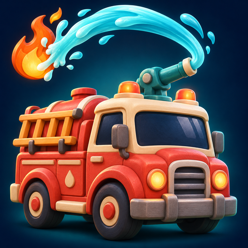
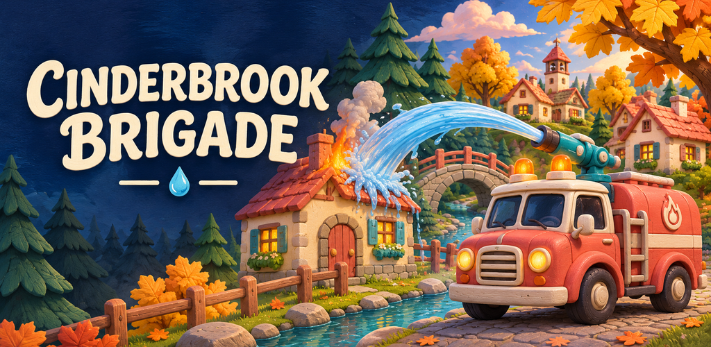
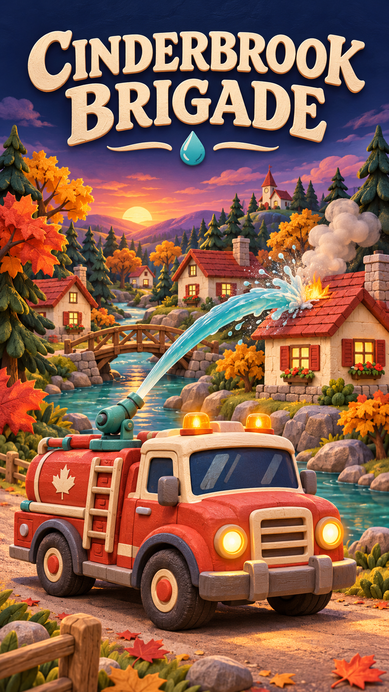
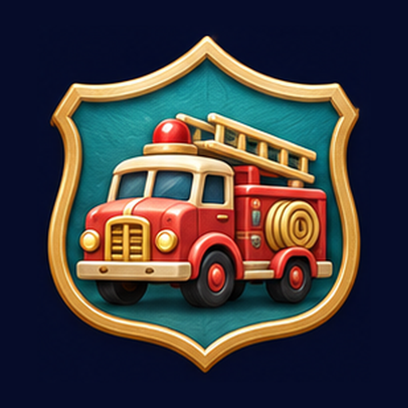
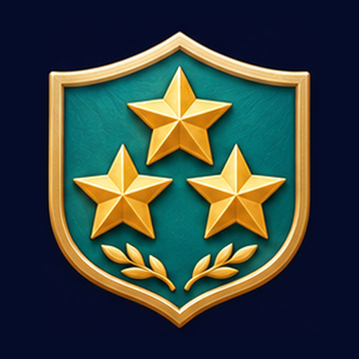
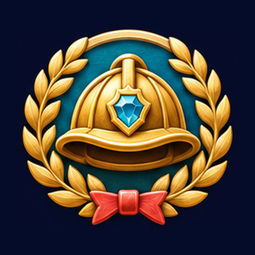

A sweep of cool blue
Trace a wide water jet across the flames. Watch hot roofs turn to drifting steam, then lift to refill.

CINDERBROOK BRIGADEANDROID PROTOTYPE · 14 NOV 2026Sweep a cool blue water jet across a tiny burning world. Watch the flames turn to steam, lift to refill, and bring the neighborhood back to calm.

Trace a wide water jet across the flames. Watch hot roofs turn to drifting steam, then lift to refill.
Save cottages, campgrounds, workshops and fairgrounds across 36 authored incidents in six little districts.
Earn stars, improve five pieces of equipment, answer the daily call and chase your Endless Watch record.

When the old station bell rings, everyone in Cinderbrook leaves a light on. Your little truck follows those lights, one neighborhood at a time.
This gallery requires unaltered native Android runtime captures with recorded dimensions and a file hash. The capture count below reports what is actually available. Emulator evidence, when present, does not establish physical-device performance.
Native runtime captures have not been added yet. The artwork on this page is promotional illustration, not gameplay evidence.
Runtime capture evidence is pending. Select a capture to inspect its original pixels.
Daily Incidents, seven-day login gifts and Endless Watch give the little town a fresh reason to call. Five upgrade branches improve cooling, capacity, sweep width, refill rate and wet protection. Twenty illustrated achievements celebrate progress.



This build uses Google test IDs. Production Play Games IDs are blank and disabled. Web play has local progress without native ads or pretend ad rewards.
Godot 4.5.1, Compatibility renderer, Kenney 3D assets and UI, original generated branding, seven original instrumental loops, separate music/effects and reduced-motion controls. The owner still needs production account/ID setup, backend verification, release signing review, final audience and Data safety declarations, a hosted privacy policy and physical-device testing. Repository publication is separate from website hosting; this page is prepared without changing Pages settings.